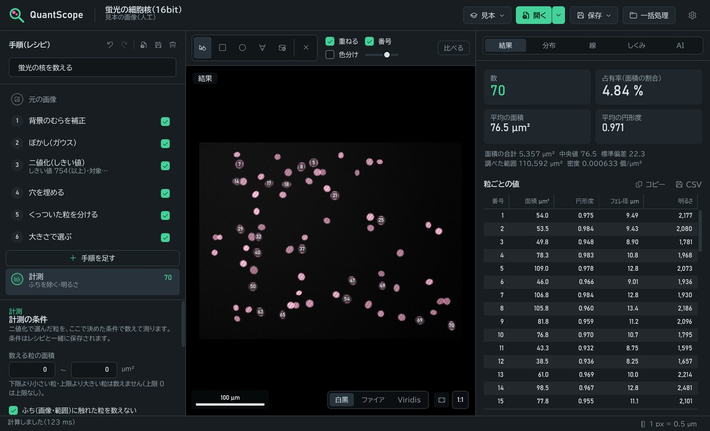
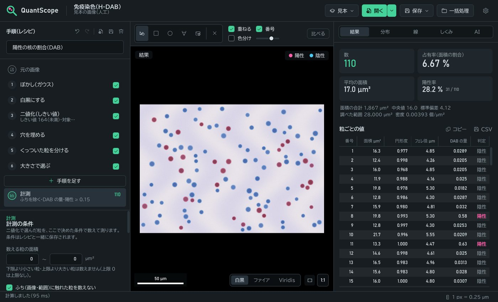
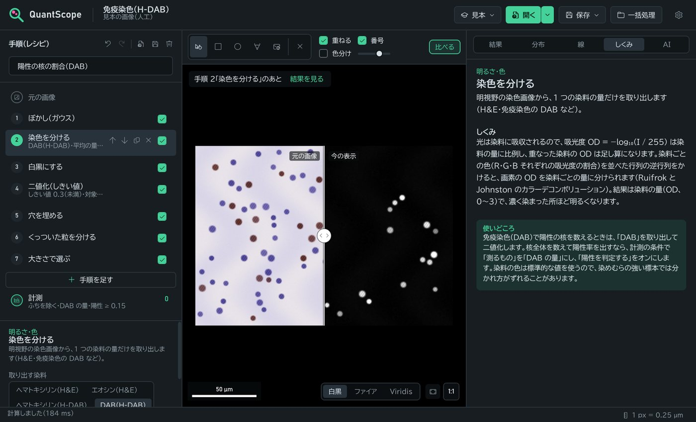

制作物の一覧へ
QuantScope
顕微鏡の画像や医用画像を、ぼかし→二値化→形を整える、と手順を積み重ねて解析し、細胞の核や粒子の数・面積・形・明るさを測るアプリ。免疫染色の陽性率も出せます。手順は「レシピ」として保存してフォルダーの画像に一括でかけられ、どの手順も「しくみ」を読みながら試せるので、画像処理を学ぶ教材にもなります。



概要
処理を1回ずつ画像に上書きするのではなく、手順の並び(レシピ)として持ちます。値を変えると、その手順から先だけを計算し直すので、しきい値やぼかしの強さを試しながら結果を確かめられます。
| プラットフォーム | Windows デスクトップ(WPF / .NET 10)・ブラウザー(Blazor WebAssembly) |
| 開発形態 | 個人開発 |
| 主な技術 | C#, MVVM, 画像処理と計測の自作(外部の画像処理ライブラリなし), カラーデコンボリューション, xUnit, GitHub Actions |
| ライセンス | MIT License |
補足研究・学習用のソフトウェアです。医療機器ではなく、診断には使えません。
構成図
データの流れに沿って、部品が順に光ります。
試してみる
ブラウザー版 haru-ki417.github.io/QuantScope/ — スマホ・タブレット・パソコンで、インストールなしで使えます。画像はブラウザーの中だけで処理し、どこにも送りません。
- 「見本」から、蛍光の核・染色した組織・免疫染色・形の見本を開くと、手順の例が入った状態で始まります(人工の画像なので、データがなくても試せます)。
- 左の列の「手順」を選ぶと、その時点の画像と、決める値・しくみが出ます。値を変えると結果がすぐ変わります。
- 結果は、画像・手順と値・計測の条件・分布をまとめた解析レポート(HTML)や、CSVで保存できます。
できること
- 読み込み: PNG・JPEG・TIFF(16 bitの白黒・カラーも)・BMP・GIF・DICOM(CTのHU、画素間隔を縮尺に)
- 31種類の処理: 白黒・染色を分ける・自動コントラスト・CLAHE・ぼかし・背景のむらの補正・しきい値(大津・三角法・反復法)・k-means・膨張と収縮・穴埋め・くっついた粒を分ける・大きさと形で選ぶ
- 計測: 粒ごとに面積・周囲長・円形度・相当直径・楕円・フェレ径・充実度・明るさ。全体の数・占有率・密度
- 陽性率: ヘマトキシリン・エオシン・DABの量を粒ごとに測り、しきい値(自動は大津の方法)で陽性・陰性に分ける
- 確かめる・直す: 表から粒へ移動、元の画像と左右に比べる、ゴミをクリックで数から除く(除いた数はレポートに残る)
- 一括処理とレポート: フォルダーの画像に同じレシピをかけ、CSVと確認用の画像を書き出す
しくみ(すべて自作)
- 前処理ぼかし・コントラスト
- 二値化大津の方法など
- 形を整える距離変換で正確な円
- 分けるウォーターシェッド
- 計測輪郭・モーメント・凸包
- 膨張・収縮: ユークリッド距離変換(Felzenszwalb–Huttenlocher)で、半径が大きくても速く、形が正確な円になる
- くっついた粒を分ける: 距離変換の山を高い順に満たし、別々の山がぶつかる所に1画素の切れ目を入れる。くぼみの浅い山は「持続性」で同じ粒にまとめ、楕円が割れすぎないようにした
- 周囲長: Moore近傍で輪郭をなぞり、チェーンコードに重みをかける(画素の階段をそのまま数えると、円で数%長くなる)
- 染色を分ける: 吸光度は染料の量に比例して足し合わさる(Lambert–Beer)。染料の色ベクトルで作った行列の逆行列で、画素ごとに染料の量に分ける
テストで確かめたこと
73件のテストで、計算の正しさを数値で確かめています。
- 円の面積が理論値の1%以内・周囲長3%以内・円形度0.95以上。正方形のフェレ径が対角線になる
- 距離変換が総当たりの計算と一致し、膨張が正確な円の格子点の数になる
- 見本の蛍光の核(70個、うち6組はくっついている)を、レシピどおりに数えると70個
- 免疫染色の見本で、核の数と陽性の数が正解と合い、陽性と判定した粒はすべて本当に陽性の核の上にある
- CSVは地域の設定によらず小数点が「.」で、表計算ソフトで式として実行されない。レポートのファイル名などはスクリプトとして実行されない
元のアプリからの改善
授業の課題で作った画像処理アプリ(WinForms)が出発点です。
- 処理を画像に上書きするのをやめ、レシピとして持っていつでも値を直せるようにした
- 「しきい値以上の画素を数える」だけだった面積を、粒ごとの計測(ラベリング・形・明るさ)と、範囲・縮尺を使った値にした
- 画素ごとのGetPixelをやめ、配列と並列処理に(2000×1500のカラー画像で、ほとんどの手順が0.1〜0.8秒)
- ソースコードに直接書かれていたAPIキーをやめ、使う人が設定してDPAPIで暗号化して保存する形にした
- 同じ計算の部品をWebAssemblyにして、スマホでも使えるブラウザー版を作った